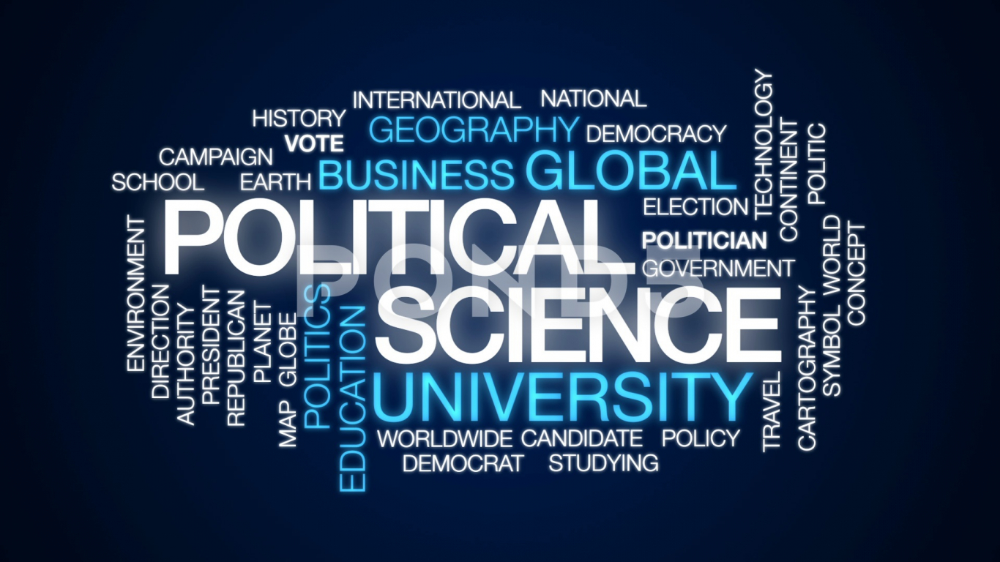
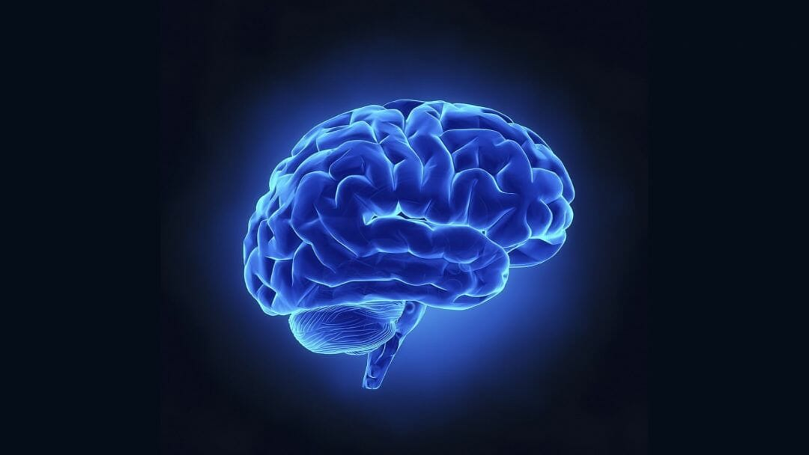

The Faculty of Social Sciences is one of the oldest faculties in University. It comprises of five departments, namely, Economics, History and Indian Culture, Political Science and Public Administration, Sociology and Psychology. Each of these departments offers Bachelor’s and Master’s Programme.The post-graduate programme has been restructured with the objective of introducing interdisplinarity.
There are four core common courses for the four social science disciplines (Economics, History, Political Science & Sociology) and a student has to opt two courses from the remaining three social science disciplines other than her own discipline. The Faculty offers an innovative interdisciplinary M.Phil Programme in Economics, History, Political Science & Sociology.
In addition to research methodology and disciplinary courses, it incorporates pedagogy and interdisciplinary courses which usually do not figure in the M.Phil Programmes offered by other universities. Yet another unique feature of M.Phil programme is compulsory teaching by the students for practical training. There are two computer laboratories for the use of students and teachers of the Faculty.
Forty computers and important softwares necessary for research work are available in the laboratories. There are nearly 30,000 text reference books and 100 national and international journals in social sciences in the central library of Banasthali Vidyapith.
| Department of Economics with a pre-independence origin has been instrumental in retaining women in higher education. The department runs B.A., M.A. and Ph.D. programs. The curriculum of the programs is highly innovative with an emphasis on experiential learning through experiment-based projects, teaching practicum, simulation exercises, data-based assignments, workshops and internships. The curriculum is updated regularly to integrate emerging trends in disciplinary knowledge. Some of the recent additions are Behavioral Economics, Economics of Environment, Economics of Health and Evidence based policy analysis. The major thrust areas of research are Gender Economics, International Trade and Investment, Macroeconomics and Development Economics. The faculty members work on UGC and ICSSR sponsored research projects particularly related to Indian economic problems. The faculty has adequate representation in conferences, seminars and workshops and has several publications in the form of research papers and books. The department has benefitted from the visits of eminent economists such as Dr. Manmohan Singh, Prof. Arvind Panagariya and Dr. Bibek Debroy. The department also organizes a lecture in memory of Prof. P. N. Mathur, an eminent social scientist (especially an economist), founding member and Vice-president of the Vidyapith. Eminent economists including Prof. V. R. Panchmukhi, Prof. A. M. Khusro, Prof. B. B. Bhattacharya, Shri Ashok Thakur, and Prof. Ramesh Chand have delivered the memorial lectures. The department also organizes activities such as debates and quizzes under its academic fest ‘Pragati'. Alumni of the department are interning and working at prestigious institutions such as NITI Aayog, Indian Institute of Foreign Trade, NABARD, SIDBI, National Institute of Public Finance and Policy, SBI, Institute of Economic Growth, Accenture, Ernst & Young, and ICICI, among others. |
|---|
|
The main thrust areas of teaching in the Department at the postgraduate level are Modern Indian History, Regional history of Rajasthan and historiography. The Department aims at teaching of history objectively with an inter-disciplinary approach. The students are initiated to develop insight into the complexities of history and to correlate them with the latest trends of historical writings. Their critical and analytical faculties are developed by encouraging them to read the latest books and journals on the subject and to writen term papers. This objective is further realized by furnishing the Central Library with good text books and the latest publications in history, and by incorporating new research accomplishments in the syllabi of postgraduate and undergraduate classes. Besides, research journals of premier research centers and universities are subscribed as they are the trendsetters and guide for the researchers. The Department has an integrated doctoral programme. It is reflected by the working of research scholars on art and architecture, environment, women, peasants, socio-economic and a host of other areas. The faculty members are also actively engeged in research; they have published research papers as well as presented these in the national and international seminars and conferences. |
|---|
|  |
The department of Political Science and Public Administration is one of the oldest departments of social science faculty in Banasthali University. The objectives of the department’s programme are to develop necessary analytical skills; to develop practical, comprehensive and competitive vision on the various issues of local, national and international importance to have an acquaintance with the latest trends; to develop good citizenship and leadership qualities; and also cultivate capabilities and skills in the students for taking up professional challenges within the parameters of value system of Banasthali University. The Department runs Ph.D., M.Phil, Post Graduate and Under Graduate programmes in Political Science as well as under graduate programme in Public Administration. The courses of study are regularly revised and updated. The main constituents of the curricula in Political Science are – Political Theory, Political Ideologies, Western and Indian Political Thought, National and International Politics, Politics of South Asia, comparative reflections on politics, Good Governance, National Movement and Constitutional development in India, and Emerging Trends in Political Science. The main constituents of the curricula of Public Administration at undergraduate level are – Principles of Public Administration, Personnel and Financial Administration, Administrative Institutions and Comparative Administration, Emerging Trends in Public Administration and Public Administration at the local, state and national level in India. The faculty and the students of the Department are actively engaged in research activities and participate in National and International Conferences/Seminars and present their research papers. The Department organises co-curricular and extra-curricular activities at various levels. Many students of the Department have qualified U.G.C.- 'NET' as well as state level 'SET' Examinations. The alumni of the Department are working in prestigious institutions as teachers, administrators, researchers, political leaders & social workers. From year 2005 annual lecture series has been initiated in the memory of first student, founding member and former President of Banasthali Vidyapith Late Professor Sushila Vyas, in which scholars of national and international repute are invited to deliver the memorial lecture. So far Prof. S.D. Muni (2005-2006), Prof. Pushpesh Pant (2006-2007), Prof. Pratap Bhanu Mehta (2007-2008), Prof. P.V. Indiresan (2008-2009), Prof Indranath Choudhary (2009-2010), Justice Dharmadhikari (2010- 2011), Prof Gowardhan Mehta (2011-2012) and Prof. Rangnathan (2012-2013) .have delivered the lecture. Department also organises exhibition every year on the occasion of Gandhi Jayanti on 2nd October. |
|---|
| Psychology is a systematic and scientific study of human behavior. It deals with two critical relationships: the Brain Functions and Behavior and the Environment and Behavior. As scientists, psychologists follow scientific methods using careful observation, experimentation and analysis in a creative and innovative manner, evolving new approaches from established knowledge to meet changing challenges of people and societies. They develop theories and test them through their researches. They conduct both basic and applied researches in diversified fields and serve as consultants to communities and organizations. There are many subfields of psychology like Experimental, Quantitative, Social, Evolutionary, Developmental, Educational, Cognitive, Clinical, Counseling, Engineering, Forensic, Health, Industrial, Rehabilitation, Sports and Neuro Psychology to mention just a few. |  |
|---|
|
Department of Sociology, one of the oldest departments, came into existence in Banasthali Vidyapith since its inception. The department has been offering courses at various levels since a very long time. The courses are designed to strike a balance between tradition and modernity. It aims to promote understanding among students on the contemporary complex patterns of social behaviour, thus enabling them to achieve success in their life. The department offers courses at B.A., M.A. and M. Phil. level. There is also the provision of Ph. D. course under this department. At UG level, apart from theoretical orientation students are also taught practical / behavioural subjects like mass communication, rural and urban sociology, social anthropology, research methodology, social demography etc. At the PG level, apart from core subjects, students are taught about new trends in sociology like sociology of health and medicine, globalization, popular culture and women studies etc. For the purpose of knowledge enhancement and better career prospects, it has also started a PG Diploma course on, ‘Women & Human Rights’. The department is closely associated with Women’s Studies & Research Centre, launched in 2005 under the support of University Grants Commission (UGC), and organizes various activities in collaboration with the centre. The faculty is actively involved in various projects of the Centre. The department is also playing a collaborative role in the course of Master of Social Work introduced in 2010. The faculty has keen research interest and published research papers in various national and international conferences as well as participated in other events of sociological importance. Under the auspice of Student body, Sanskriti, the department provides a platform for the students to share their ideas and views on varied social issues. Activities like debate, extempore, speeches, quiz, essay and other academic and cultural programmes and competitions, are regularly organized for active participation of students from varied disciplines. Various subject specialists are also invited as guest lecturers, to deliver their experiences and knowledge. Other than teaching, the faculty also provides career counseling to students. |
|---|